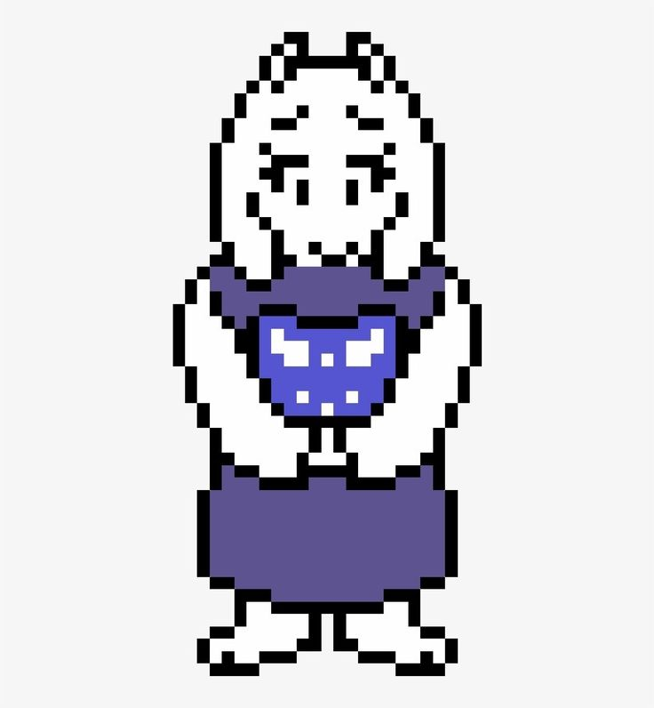

Toriel é uma personagem introdutória no jogo de RPG Subconto de 2015,
atuando como primeira chefé de área. Uma figura materna criada como uma
personificação de tutoresiais excessos de videogames (daí o nome Toriel ),
ela pertince à raça dos monstros e possui orelhas caídas, pequenos chifres,
pelagem branca e um tanto roxo. O jogador pode optar por matá-la ou convecê-la
a parar de lutar, o que afetou o desenrolar da história. Ela também aprece em
Deltarune, mas com um papel diferente.